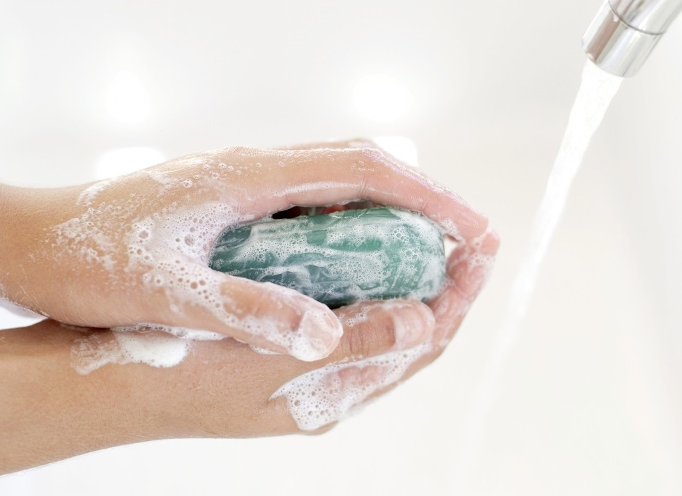

How Clean is Too Clean?
Exploring the Benefits of Germ Diversity
Catherine Li
Fall 2013
 Purell®, Lysol®, Clorox®, as well as countless other brands, offer a vast variety of cleaning products, disinfectants, and antibacterials. The general consensus is that the more germ-free, the better. That belief is in no way unfounded though, since microbes, such as bacteria, are known to cause many illnesses. However, there is a point where society’s obsession with making everything germ-free may do us harm as well.
There is no doubt that keeping ourselves and our surroundings germ-free is the best way to prevent the spread of potentially harmful microbes. In the 1980s, however, scientists began to notice that children living in developed areas, where disinfectants and antibacterials were widely used, had greater incidences of allergies and asthma compared to children residing in underdeveloped areas. In 1989, British physician Dr. David Strachan presented a hypothesis to explain this phenomenon. Dubbed the “Hygiene Hypothesis,” it stated that immune disorders, including allergies and asthma, were increasing among children in developed countries because of their lowered rates of infections.
Recently, scientific evidence supporting Dr. Strachan’s Hygiene Hypothesis has increased. Most of the data has shown that being exposed to a wide variety of microbes can help prevent the immune system from overreacting in certain situations. Currently, scientists are still unsure about exactly how microbes regulate the immune system. Some scientists have hypothesized that exposure to different types of bacteria can correspond to reduced incidence of different types autoimmune disorders. However, Kevin Bonham, a sixth year immunology graduate student at Harvard University, argues that this cannot be the case since exposure to any type of bacteria correlates to an overall decrease for these autoimmune disorders.
In order to try to qualify these claims, there has been an increase in research regarding the presence of certain microbes in our bodies and autoimmune disease prevention. Recent research led by Dr. Alexander Chervonsky of the Department of Pathology at the University of Chicago, found that diabetes can be influenced by the microbes present in the intestinal tract. The study observed mice and found that specimens without the microbe Candidatus Savagella in their intestines would get more severe forms of diabetes while those with the microbe did not. The Mathis-Benoist lab at the Harvard Medical School identified this microbe as one that provided enough protection to prevent diabetes. However, this bacteria was also more prevalent in animals with other types of autoimmune disorders so it was not viable for additional research in methods of diabetes prevention. This case illustrates that while scientists are still struggling to make sense of the relationship between microbes and immune responses, there is definitely potential for further research in this area.
A related study conducted by biologist Jeffrey Gordon at Washington University in St. Louis found that intestinal microbes also contributed to obesity in mice. The microbes were originally taken from a set of human twins, where one twin was obese and the other was not. Initially, neither mouse was more prone than the other to gaining weight. However, the mouse that received the lean twin’s microbes remained lean while the mouse that received the obese twin’s microbes gained weight. This shows that the gut microbes taken from the twins were a key factor in determining the weight of the mice. Furthermore, these scientists also found that, if allowed to interact for an extended period, the microbes from the lean mouse could transfer to the obese mouse, who then lost weight. The lean mouse had a greater variety of microbes in its intestines compared to the obese mouse, so this showed that being exposed to more microbes helped the obese mouse.
These studies relating microbes and
certain diseases or conditions show that not all microbes are harmful
to us. In fact, many are proving to be beneficial. While being
mindful of germs can reduce infections, being overly so can also lead
to a variety of immune disorders associated with being underexposed to
microbes. Disinfectants and antibacterials that claim to kill
over ninety-nine percent of germs often kill a greater proportion of
germs that increase helpful microbial diversity than germs that
potentially harm us. Each time we consider using these products,
it is important to keep in mind the population of our beneficial
microbes we could be wiping out.
About the Author
Catherine Li, class of 2017, is an intended Public Health and Film double major who plans on pursuing a career in medicine.